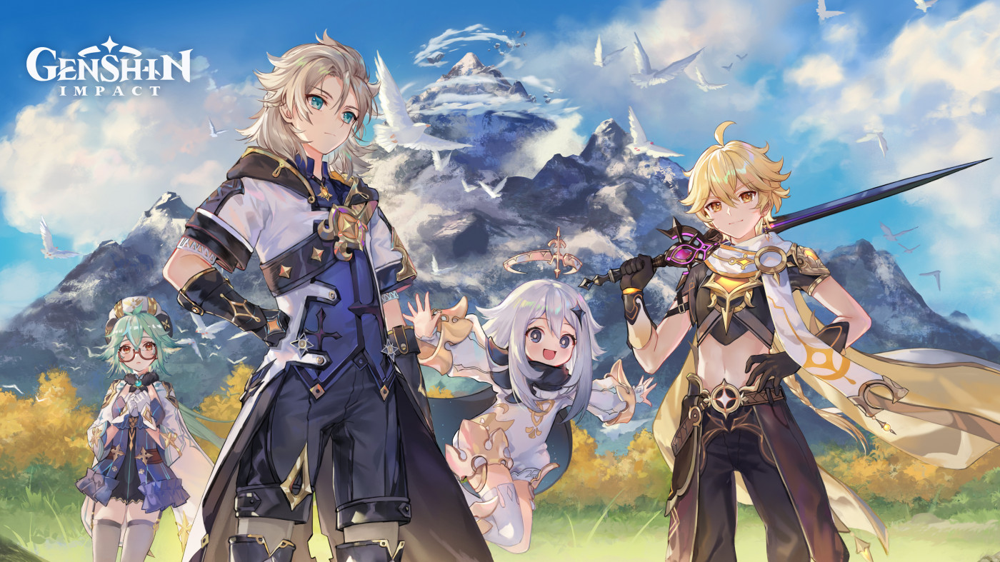

MUSIC and GAMES
Quanto è importante la musica in un videogioco?
La musica ha accompagnato l'essere umano in tutta la storia della sua evoluzione. Il neurologo Facundo Manes, sulla rivista El Paìs, parla dell’effetto della musica sul nostro cervello e del suo legame con l’essere umano. La musica può essere considerata come una sorta di piacere, pari al sesso, in quanto permette il rilascio di dopamina.
In particolar modo, all'interno di un videogioco, la colonna sonora perfetta fa sì che il player si riesca ad immedesimare ancora di più nel protagonista, rendendo l'esperienza di gioco a dir poco emozionante.
Qui di seguito troverai alcuni dei giochi più famosi.

